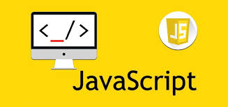

¿Qué es HTML?

Es el lenguaje con el que se define el contenido de las páginas web. Corresponde a las siglas en inglés de Lenguaje de Marcado de Hipertexto, básicamente son un conjunto de etiquetas que el navegador interpreta y se emplean para definir el texto y otros elementos que compondrán una página web
¿Qué es CSS?

Es lo que se llama un lenguaje de hojas de estilo en cascada y se utiliza para estilizar elementos escritos en un lenguaje de marcado como HTML. Permite separar el contenido HTML de su presentación visual. Es decir, te permite mantener el código HTML limpio y estructurado, mientras que el estilo se define en un archivo CSS separado
¿Qué es JAVASCRIPT?
Es un lenguaje de programación que los desarrolladores utilizan para hacer páginas web interactivas. Desde actualizar fuentes de redes sociales a mostrar animaciones y mapas interactivos.
Licenciatura en Sistemas Computacionales
© Copyright 2022. JOEL ISAAC ENCINOS RUIZ